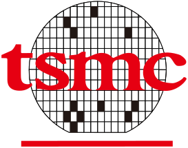

2022 ANNUAL COMPUTER ARCHITECTURE CONFERENCE
The Creative Commons Global Summit , held every two years, is a place where CC activists from all over the world and experts, scholars and activists from all walks of life who support and practice open culture gather together.
In particular, this year's CC Summit awaits the participation of
various organizations and individual participants who want to
participate in activities to spread the value of sharing, free
culture, and open knowledge with CC.
Free software supporters, Wikipedia activists, open knowledge
foundation activists, art galleries, libraries, museums, archives,
governments, foundations, lawyers, social activists, etc. various
people active in the field of open content and open knowledge gather
in one place to share richer and more dynamic We hope that it will
be an opportunity to share our thoughts on creating an ecosystem.
October 14 - 16, 2022 (Friday - Sunday)
See you at the CC Global Summit!
Do you have any other questions about CC Global Summit 2015?
ccsummit2015@cckorea.org
Taiwan Semi-Conductor Manufacturing Company Logo
The winner of the logo contest, which was held from June 8th to July 7th, was decided through online voting and evaluation by the judges. After consultation with the winning designer, the logo of CC Global Summit 2015, which was optimized for use on the website and promotional materials, is as follows.
Naresh Agrawal of India, who designed the winning piece, explains the meaning of the logo as follows.
" The multi-colored circles symbolize the fusion of technology by subject matter experts from different parts of the world. The circle symbolizes protection, harmony, wholeness and infinity, with no beginning or end, no seclusion, 'oneness'. It has the meaning of '. "
View past global summits
Take a look at the recent global summits held in Buenos Aires, Argentina and Warsaw, Poland.
2015
Intel CES
2014
Samsung CES